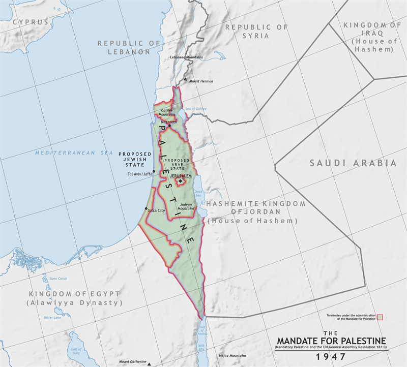

Conflict in the Middle East
Teacher Answer Key

Task: Fill in the blanks in the summary below using the correct words from the word bank.
Following World War II, Britain struggled to control its League of Nations ______________________ in Palestine. The horrors of the Holocaust increased international sympathy for ______________________, leading to demands for a Jewish state. As tensions rose, militant groups like the ______________________ launched violent attacks against the British, such as the bombing of the King David Hotel. Ultimately, the 1948 war resulted in the creation of Israel but also led to the ______________________, where hundreds of thousands of Palestinians were displaced.

GCSE examiners award top marks to students who can analyze how multiple, interrelated factors combined to produce the war's final outcome. Israel's victory was not a miracle, but rather the result of distinct military, political, and structural advantages.
The Arab coalition was plagued by deep political rivalries and conflicting territorial ambitions. For example, King Abdullah of Transjordan was primarily interested in annexing the West Bank for his own kingdom, rather than destroying Israel. Although facing a combined Arab population of 41 million, the 650,000 Jews of Israel mobilized their entire society. At the war's start, Israel's combat forces stood at 35,000 (already larger than the active invasion force). By December 1948, the IDF grew to a highly coordinated force of 108,000 troops, vastly outnumbering the fragmented Arab armies.
Historians sharply disagree on the nature of Plan D. Traditional Israeli historians argue it was a purely defensive necessity to secure besieged Jewish settlements before the Arab armies invaded. However, 'New Historians' like Ilan Pappé argue the text of Plan D proves it was a deliberate blueprint for the systematic ethnic cleansing of Palestinian Arabs from the future Jewish state.
How useful are Sources A and B for an enquiry into Write a narrative account analysing the key events of 1945–48 which led to the creation of Israel. (8 marks)?
“We must use terror, assassination, intimidation, land confiscation, and the cutting of all social services to rid the Galilee of its Arab population.”
Source A: A quote often attributed to a Zionist commander, reflecting the offensive view of Plan D.
“The objective of this plan is the control of the area of the Jewish State and the defense of its borders... against the enemy.”
Source B: An extract from the official text of Plan Dalet, March 1948.
| Source | N.O.P. (Nature, Origin, Purpose) | Content (What it shows/says) | Contextual Knowledge |
|---|---|---|---|
| A | |||
| B |
Task: Read the key terms and their definitions. Choose two terms and write a single, historically accurate sentence that connects them.
Task: Complete the Frayer Models for the key concepts below. Write the definition, one historical example, and one non-example (or a sketch).
| Definition: A political movement aimed at uniting all Arab nations to throw off Western colonial influence and secure Arab independence. |
Historical Example: |
| Characteristics: | Non-example / Sketch: |
| Definition: A 1955 agreement where the Soviet bloc supplied Egypt with massive amounts of advanced weaponry, shocking the West. |
Historical Example: |
| Characteristics: | Non-example / Sketch: |
Task: Fill in the blanks in the summary below using the correct words from the word bank.
In the 1960s, Palestinian nationalism grew stronger with the creation of the ______________________, an umbrella organization, and its dominant guerrilla faction, ______________________. Border tensions flared violently when Israel launched the ______________________ into the West Bank in 1966. These escalating events eventually culminated in June 1967 when Israel launched ______________________, a devastating pre-emptive air strike that wiped out the Arab air forces on the ground.
Task: Read the key terms and their definitions. Choose two terms and write a single, historically accurate sentence that connects them.
Task: Complete the Frayer Models for the key concepts below. Write the definition, one historical example, and one non-example (or a sketch).
| Definition: A grinding border conflict (1969-1970) where Nasser used continuous artillery fire and raids to wear down Israel along the Suez Canal. |
Historical Example: |
| Characteristics: | Non-example / Sketch: |
| Definition: Advanced Soviet surface-to-air missiles installed along the Suez Canal to shoot down Israeli fighter jets. |
Historical Example: |
| Characteristics: | Non-example / Sketch: |
Task: Fill in the blanks in the summary below using the correct words from the word bank.
Task: Read the key terms and their definitions. Choose two terms and write a single, historically accurate sentence that connects them.
Task: Complete the Frayer Models for the key concepts below. Write the definition, one historical example, and one non-example (or a sketch).
| Definition: Unified National Leadership of the Uprising; grassroots local committees that coordinated the First Intifada on the ground. |
Historical Example: |
| Characteristics: | Non-example / Sketch: |
| Definition: A diplomatic framework proposing an independent State of Palestine alongside the State of Israel. |
Historical Example: |
| Characteristics: | Non-example / Sketch: |